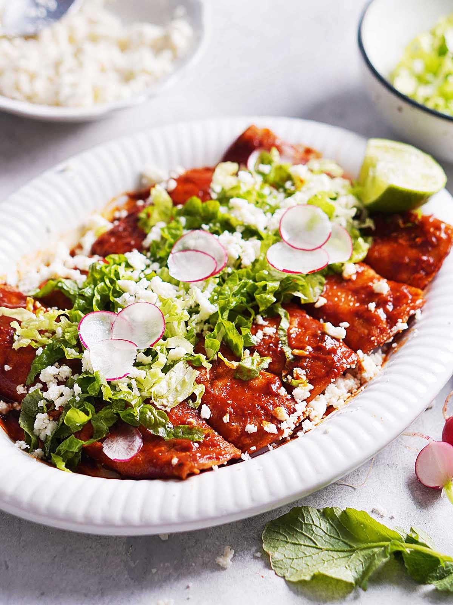

Red enchiladas

Description
The best recipe to prepare some beautiful red enchiladas. These are the best thing you can make if you ain't mexican so pay a lot of attention so you too can impress your white friends with your "world cuisine" skills.
Ingredients
- 4 maize tortillas
- 1 tomato
- 50 grams of ancho chili
- 1 garlic bulb
- 50 grams guajillo chili
- 50 grams fresh cheese (look it up in spanish)
- 100 grams chicken
- 1/4 tablespoon of oregano
- Sunflower oil
- Salt and pepper
Steps
- Remove seed from the chilies and boil the skins.
- Boil chicken and strip.
- Add chopped tomato, onion, and garlic to simmering oil and leave for 2-3 minutes.
- Mix fried veggies and boiled chilies in a blender until it's pureed.
- Bathe tortillas in puree and fry on a pan for 2 minutes.
- Add chicken to fried tortillas and make it into a roll.
- Decorate with cheese on top.